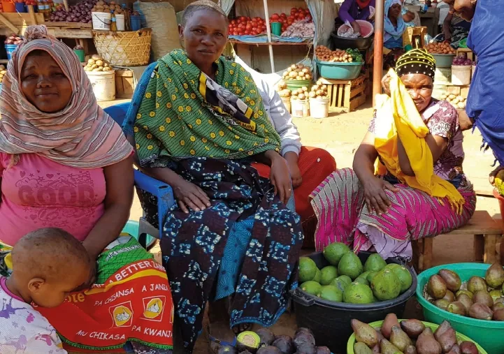
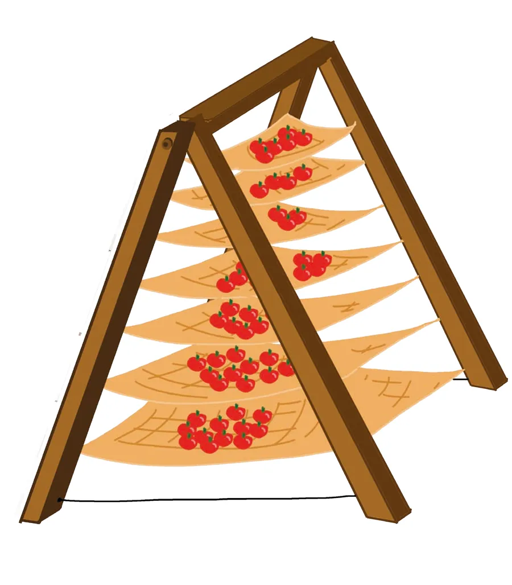
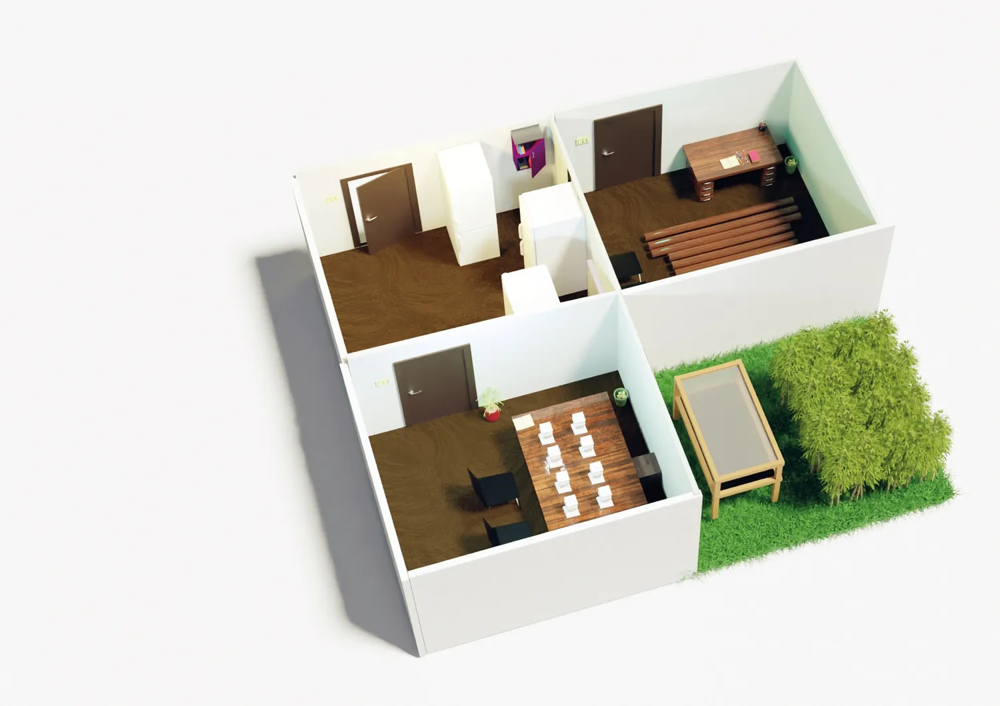

Sustainability Consulting2021
Minazi Consulting
Preventing Food Waste in Tanzania
How might we reduce food waste in Babati, Tanzania?

Currently in Babati, 5-10% of fresh fruits such as avocados, bananas, tomatoes, and mangoes are being wasted from farmer to market.
This is due to the process with which the farmer sends produce to the market and due to the fast ripening times of the fruits. Additionally, farmers are cutting down trees to create stakes to support tomato crops, which is leading to deforestation. Livingstone Tanzania Trust is an NGO trying to solve this problem. Interventions were made for 4 main areas: Ripening, Drying, Juicing and Tomato Stakes.

Design Solutions
After a stage of research into factors affecting food waste we began design sprints to come up with simple solutions to the problems of produce variety and mechanical damage. I ran ideation sessions for the team whilst brainstorming myself and visualising outputs. Along with the immediate and intermediate solution summaries I made sets of instruction booklets to aid the end user’s understanding. The immediate solutions have already been implemented in Babati.

Staged Intervention
The long term intervention for the project is the Babati recycling centre, combining refrigeration, fruit blending stations, plastic stake production, bamboo growing and solar drying. This will begin to be tested in LTT’s office, 1 mile from the main market. Market sellers have shown interest in the various solutions which should provide a quicker path to implementation.